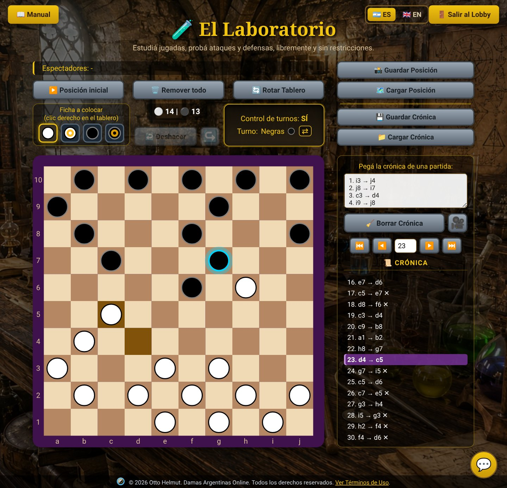
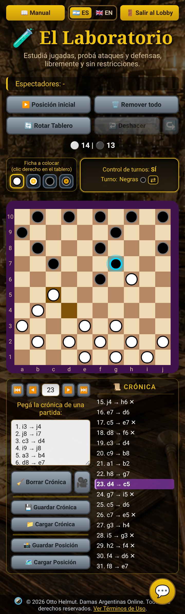
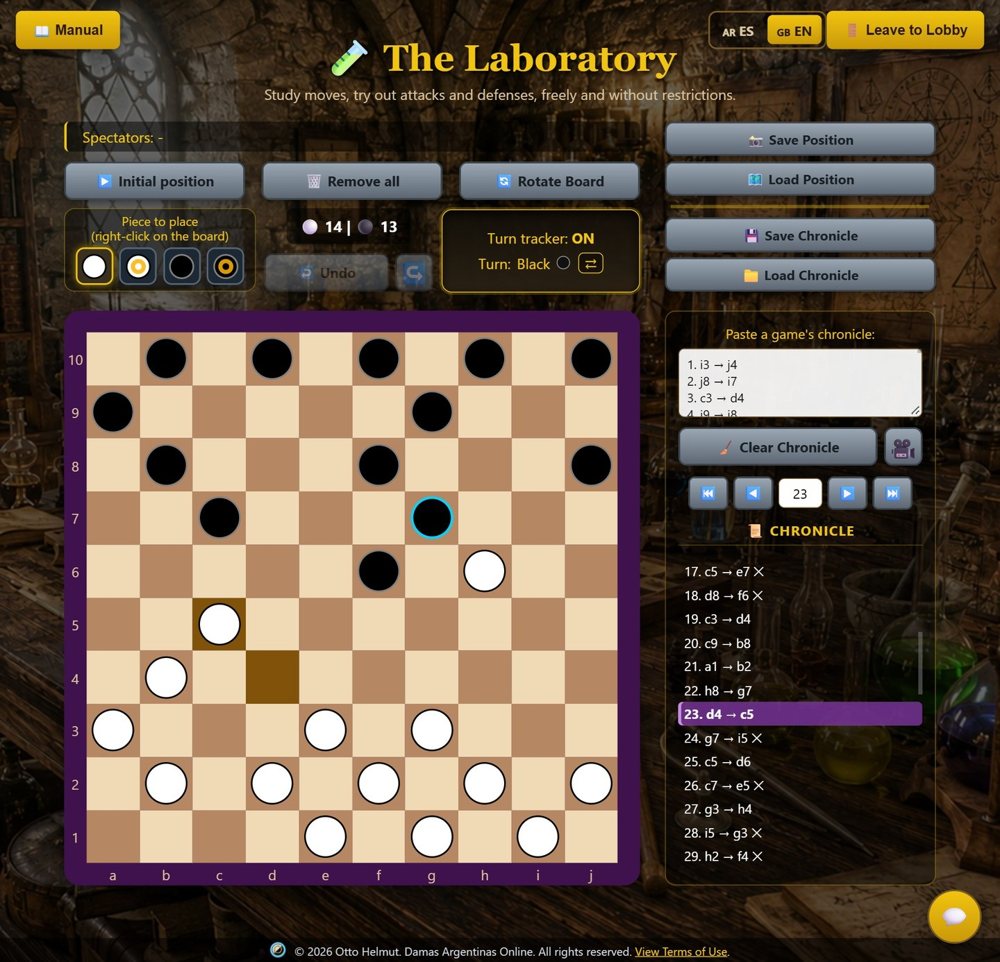
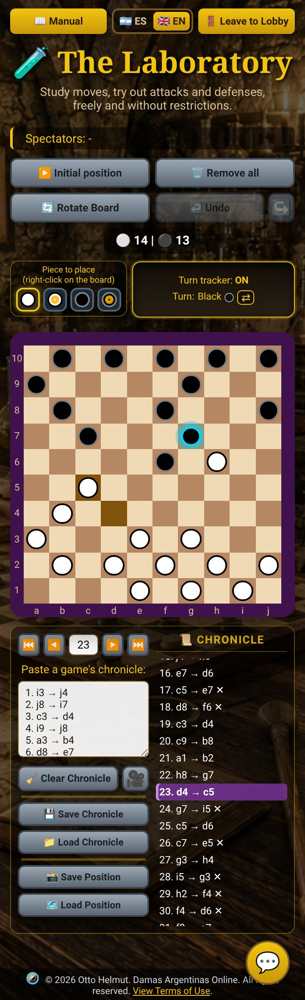

Estudiá jugadas, probá ataques y defensas, libremente y sin restricciones.
(si aceptás, salís del laboratorio)
Al ingresar y utilizar Damas Argentinas Online (en adelante, "el Sitio"), aceptás estos Términos de Uso en su totalidad. Si no estás de acuerdo con alguno de sus puntos, te pedimos que no utilices el Sitio.
El Sitio es operado por Otto Helmut (en adelante, "el autor" o "nosotros"), desde la República Argentina.
Damas Argentinas Online es una plataforma gratuita para jugar en línea a las damas argentinas, una variante del juego de damas. El Sitio permite jugar entre dos personas en tiempo real e incluye una función de chat para que los jugadores puedan comunicarse durante la partida.
El Sitio implementa una variante propia del reglamento tradicional de damas argentinas, que excluye la regla del "soplo" por decisión del autor, explicada en el reglamento publicado en el Sitio.
Para jugar no es necesario crear una cuenta. Alcanza con ingresar un nombre o apodo al momento de acceder a una partida. Este dato:
El Sitio no recolecta, almacena ni procesa datos personales de sus usuarios. No se solicitan correos electrónicos, contraseñas ni ningún otro dato identificatorio más allá del apodo temporal de sesión.
Podés encontrar más precisiones sobre esto en la sección 8. Privacidad.
El chat integrado tiene como único fin permitir la comunicación entre jugadores durante una partida. Al usarlo, te comprometés a:
Como las partidas y el chat no requieren registro ni verificación de identidad, el autor no puede controlar ni garantizar la identidad real de los usuarios ni el contenido que estos publiquen en tiempo real, y no asume responsabilidad por los mensajes, conductas o contenido generado por terceros usuarios del Sitio. El autor se reserva el derecho de interrumpir o restringir el acceso a una partida o al chat ante un uso indebido detectado, sin que esto genere obligación ni responsabilidad alguna hacia el usuario afectado.
Si sos víctima o testigo de una conducta abusiva a través del chat, podés reportarla al correo de contacto indicado en la sección 10.
Las reglas generales y la mecánica tradicional del juego de damas argentinas son de dominio público. Nadie —incluido el autor de este Sitio— reclama derechos de autor sobre dichas reglas en tanto tales.
Son obra original del autor y están protegidos por la Ley N.º 11.723 de Propiedad Intelectual de la República Argentina y por los tratados internacionales de derecho de autor de los que Argentina es parte (Convenio de Berna):
Todos los derechos sobre lo anterior están reservados. Queda prohibida su reproducción, distribución, modificación, ingeniería inversa del código con fines de copia, o comunicación pública, total o parcial, sin autorización previa y por escrito del autor.
Nada en estos Términos impide que terceros desarrollen sus propias implementaciones del juego de damas argentinas, en tanto no reproduzcan el código, diseño, textos o marca propios de este Sitio.
Todos los personajes de fantasía, ilustraciones, nombres, historias y contenidos relacionados que aparecen en el Sitio son propiedad intelectual exclusiva del autor.
Queda estrictamente prohibida la réplica, copia, distribución, modificación o uso comercial o no comercial de dichos personajes sin la autorización expresa, previa y por escrito del autor. El uso no autorizado de este material constituirá una violación a los derechos de propiedad intelectual del autor y dará lugar a las acciones legales correspondientes.
El uso del Sitio es actualmente gratuito y no requiere ningún pago. En el futuro, el Sitio podrá incorporar una opción de donaciones voluntarias (por ejemplo, del tipo "invitame un café") para colaborar con su mantenimiento. Las donaciones, si se implementan, serán estrictamente voluntarias y no otorgarán a quien las realice ningún derecho, beneficio, funcionalidad exclusiva ni participación sobre el Sitio, salvo que se indique expresamente lo contrario en su momento.
El Sitio se ofrece "tal cual" (as is), sin garantías de disponibilidad, continuidad o ausencia de errores. El autor no garantiza que el servicio esté disponible de forma ininterrumpida y podrá modificar, suspender o discontinuar el Sitio, total o parcialmente, en cualquier momento y sin previo aviso.
El autor no se responsabiliza por la pérdida de partidas en curso, interrupciones del servicio, ni por daños o perjuicios derivados del uso o la imposibilidad de uso del Sitio.
El Sitio no recolecta datos personales de los usuarios más allá del apodo temporal de sesión mencionado en la sección 3, el cual no se almacena de forma persistente.
Es posible que el proveedor de hosting del Sitio (actualmente Render) genere registros técnicos automáticos propios de la operación de cualquier servidor web (por ejemplo, direcciones IP en logs de acceso), ajenos al control directo del autor y necesarios para el funcionamiento técnico del servicio. Estos registros no son utilizados por el autor con fines de identificación, seguimiento o perfilado de usuarios.
Si en el futuro el Sitio incorpora funcionalidades que impliquen la recolección de datos personales (por ejemplo, cuentas de usuario), estos Términos serán actualizados e incorporarán una Política de Privacidad específica.
El autor podrá modificar estos Términos de Uso en cualquier momento. La versión vigente será siempre la publicada en esta misma sección, con su fecha de última actualización. El uso continuado del Sitio luego de una modificación implica la aceptación de los nuevos términos.
Para consultas, reclamos vinculados a propiedad intelectual, reportes de mal uso del chat, o cualquier otra comunicación relacionada con el Sitio:
Email: contacto por email
Estos Términos se rigen por las leyes de la República Argentina. Para cualquier controversia derivada del uso del Sitio, las partes se someten a la jurisdicción de los tribunales ordinarios de la Provincia de Buenos Aires, con renuncia a cualquier otro fuero que pudiera corresponder.
Damas Argentinas Online es un proyecto independiente y no comercial. El reglamento de juego implementado es una variante propia elaborada por el autor a partir de reglas de dominio público, con las particularidades descriptas en el reglamento publicado en el Sitio.
El Laboratorio es la herramienta definitiva para estudiar las damas argentinas y aprender a jugar mejor. Acá te contamos cómo sacarle todo el jugo.
Y además: Dos palabras que vas a ver mucho · Las señales del tablero · Todos los botones de un vistazo · Preguntas frecuentes.
📜 Crónica: el registro de una partida, jugada por jugada, como la planilla del ajedrez (“1. c3 → d4”, “2. h8 → g7”…). En tus duelos contra humanos y bots se va escribiendo sola al costado del tablero.
📸 Posición: cómo está el tablero en un momento dado (qué fichas hay y dónde) y a quién le toca mover. Es como una foto del tablero: no dice cómo se llegó hasta ahí.
El color del marco te dice, de un vistazo, qué estás mirando:
La lista de la crónica repite el color: la jugada marcada se ve violeta, verde o roja, igual que el marco. Y sobre el tablero:
Es como tener un tablero de verdad sobre la mesa: armás la posición que quieras y movés los dos colores, siempre con las reglas de las damas argentinas.
💡 Con el mouse sobre el tablero, la ruedita cambia la ficha a colocar.
💡 Lo que cambia todo el tablero de una vez (▶️ Posición inicial, 🗑️ Remover todo, cargar una posición o ir a otra jugada de una crónica) no se deshace.
¿Te ganaron con una jugada que no viste venir? Traela al Laboratorio, mirá cómo se fue armando, y la próxima la usás vos.
Durante o después de un duelo contra un humano o un bot, debajo de la crónica tenés 📋 Copiar Crónica y 💾 Guardar Crónica. Sirve también si estabas mirando la partida de otros. Con eso, acá en el Laboratorio:
💡 🧹 Borrar Crónica la saca de la lista; el texto queda en el cuadro. Para reproducir otra, primero borrás la que está en la lista.
💡 Una crónica no tiene por qué empezar en la posición inicial: puede arrancar en cualquier posición, con la partida ya avanzada. A ese punto de arranque lo llamamos posición de partida.
Es el corazón del estudio: frenás en una jugada y probás lo que no se jugó. ¿Qué pasaba si en vez de esa ficha movía la otra?
💡 ◀️ y ▶️ cuentan desde la jugada marcada en la lista: si te apartaste en la 12, ▶️ te lleva a la 13 de la partida real.
💡 Si querés que lo que vas a probar quede anotado, prendé la 🎥 antes de mover, con el marco en violeta: así le das otro final a la partida (mirá Generá tus propias crónicas).
Con la filmadora prendida, cada jugada que hacés en el tablero se anota en la crónica, como en un duelo.
💡 Si el chatbot te contesta una jugada que no vale, el tablero no la deja hacer: pedile otra. Pasarle la crónica entera en cada mensaje lo ayuda a no perderse.
💡 Mientras graba, el tablero solo cambia con jugadas: el clic derecho no pone ni saca fichas, y ↩️ Deshacer borra la última jugada anotada. Graba hasta 250 jugadas; al llegar, se apaga sola.
💡 Si apagás la 🎥 sin haber jugado nada, todo queda como estaba. Y si mientras graba tocás ▶️ Posición inicial o 🗑️ Remover todo, cargás una posición o apagás el Control de turnos, la grabación se corta: lo grabado queda en la lista.
Son los mismos archivos de los duelos contra humanos y bots: van y vienen sin problema, en cualquiera de los dos idiomas.
Además, son archivos de texto común: se abren con cualquier editor, y se pueden mandar por mail o por WhatsApp. Se bajan a tu carpeta de descargas, con la fecha y la hora en el nombre (por ejemplo, cronica_2026-10-17_22-52.txt).
En el Salón de los Caballeros aparecés como 🔬 (Laboratorio). Haciendo clic ahí, pueden desafiarte o mirar tu laboratorio.
Los que miran ven tu tablero en vivo, con el mismo color de marco y la huella de la última jugada, pero no pueden tocar nada. Arriba del tablero, Espectadores te dice quiénes son. Ideal para explicarle una jugada a un amigo mientras charlan por el 💬 chat del Salón.
💡 Si te desafían mientras estudiás, el aviso te llega igual. Si aceptás, salís del Laboratorio para ir al duelo: antes, guardá lo que no quieras perder.
Los números de la imagen son las zonas de la tabla.


| Zona | Botón | Para qué sirve |
|---|---|---|
| 1 | 📖 Manual | Abre este manual. |
| 1 | 🇦🇷 ES🇬🇧 EN | Cambian el idioma de todo el sitio. |
| 1 | 🚪 Salir al Lobby | Te lleva de vuelta al Salón de los Caballeros. |
| 2 | Espectadores | Quiénes están mirando tu tablero. |
| 2 | ▶️ Posición inicial | Pone las 30 fichas en su lugar de salida. |
| 2 | 🗑️ Remover todo | Deja el tablero vacío. |
| 2 | 🔄️ Rotar Tablero | Da vuelta el tablero, para verlo desde el lado de las negras. |
| 32 | ↩️ Deshacer ↪️ | Vuelven atrás lo último que hiciste, o lo rehacen. |
| 32 | ⚪ 15 | ⚫ 15 | Cuántas fichas hay de cada color. |
| 3 | Ficha a colocar | Qué ficha pone el clic derecho (en celular, el dedo apretado). |
| 3 | Control de turnos: SÍ | SÍ: se respetan los turnos. NO: movés cualquier color. |
| 3 | ⇄ | Cambia a quién le toca mover. |
| 4 | 📸 Guardar Posición | Baja en un archivo la posición del tablero. |
| 4 | 🗺️ Cargar Posición | Pone en el tablero una posición guardada. |
| 4 | 💾 Guardar Crónica | Baja en un archivo la crónica de la lista. |
| 4 | 📁 Cargar Crónica | Abre un archivo de crónica y la reproduce. |
| 5 | Cuadro de texto | Para pegar una crónica con miras a reproducirla. |
| 5 | ▶️ Reproducir Crónica | Reproduce la crónica pegada en el cuadro. |
| 5 | 🧹 Borrar Crónica | Saca la crónica de la lista (el texto queda en el cuadro). |
| 5 | 🎥 | Genera una crónica con lo que vos movés. |
| 5 | ⏮️ ⏭️ | Retroceden o avanzan diez jugadas. |
| 5 | ◀️ ▶️ | Retroceden o avanzan una jugada. |
| 5 | Campito del medio | Escribís un número y Enter: vas a esa jugada. |
| 5 | 📜 Crónica | La lista de jugadas: con un clic en una, el tablero va ahí. |
| — | 💬 | Abre el chat del Salón. |
The Laboratory is the ultimate tool for studying Argentine checkers and learning to play better. Here's how to get the most out of it.
Also: Two words you'll see a lot · The board's signals · Every button at a glance · Frequently asked questions.
📜 Chronicle: the record of a game, move by move, like a chess scoresheet (“1. c3 → d4”, “2. h8 → g7”…). In your duels against humans and bots, it writes itself next to the board.
📸 Position: how the board stands at a given moment (which pieces there are, and where) and whose turn it is. It's like a photo of the board: it doesn't say how the game got there.
The color of the frame tells you, at a glance, what you're looking at:
The chronicle's list repeats the color: the marked move shows up purple, green or red, just like the frame. And on the board:
It's like having a real board on the table: set up any position you like and move both colors, always under the rules of Argentine checkers.
💡 With the mouse over the board, the scroll wheel changes the piece to place.
💡 Anything that changes the whole board at once (▶️ Initial position, 🗑️ Remove all, loading a position, or going to another move of a chronicle) can't be undone.
Did someone beat you with a move you didn't see coming? Bring it to the Laboratory, see how it was set up, and next time you'll be the one playing it.
During or after a duel against a human or a bot, below the chronicle you'll find 📋 Copy Chronicle and 💾 Save Chronicle. It also works if you were watching someone else's game. With that, here in the Laboratory:
💡 🧹 Clear Chronicle removes it from the list; the text stays in the box. To play another one, first clear the one in the list.
💡 A chronicle doesn't have to begin at the initial position: it can start from any position, with the game already under way. We call that starting point the starting position.
It's the heart of studying: you stop at a move and try what wasn't played. What would have happened if, instead of that piece, I had moved the other one?
💡 ◀️ and ▶️ count from the move marked in the list: if you strayed at move 12, ▶️ takes you to move 13 of the real game.
💡 If you want what you're about to try to be written down, turn on the 🎥 before moving, with the frame purple: that way you give the game a different ending (see Generate your own chronicles).
With the camera on, every move you make on the board is written into the chronicle, just like in a duel.
💡 If the chatbot replies with a move that isn't valid, the board won't allow it: ask for another one. Sending it the whole chronicle in every message helps it keep track.
💡 While recording, the board only changes through moves: right-clicking doesn't place or remove pieces, and ↩️ Undo erases the last recorded move. It records up to 250 moves; when it gets there, it switches itself off.
💡 If you switch the 🎥 off without having played anything, everything stays as it was. And if, while recording, you click ▶️ Initial position or 🗑️ Remove all, load a position, or turn the Turn tracker off, the recording stops: what was recorded stays in the list.
They're the same files as in duels against humans and bots: they go back and forth without any trouble, in either language.
They're also plain text files: any editor opens them, and you can send them by email or WhatsApp. They go to your downloads folder, with the date and time in the name (for example, chronicle_2026-10-17_22-52.txt).
In the Knights' Hall you show up as 🔬 (Laboratory). By clicking there, others can challenge you or watch your laboratory.
Those watching see your board live, with the same frame color and the footprint of the last move, but they can't touch anything. Above the board, Spectators tells you who they are. Perfect for explaining a move to a friend while you chat in the 💬 Hall Chat.
💡 If someone challenges you while you're studying, the notice still reaches you. If you accept, you leave the Laboratory to go to the duel: before that, save anything you don't want to lose.
The numbers on the picture are the zones in the table.


| Zone | Button | What it does |
|---|---|---|
| 1 | 📖 Manual | Opens this manual. |
| 1 | 🇦🇷 ES🇬🇧 EN | Change the language of the whole site. |
| 1 | 🚪 Leave to Lobby | Takes you back to the Knights' Hall. |
| 2 | Spectators | Who's watching your board. |
| 2 | ▶️ Initial position | Sets up the 30 pieces as at the start of a game. |
| 2 | 🗑️ Remove all | Empties the board. |
| 2 | 🔄️ Rotate Board | Turns the board around, to see it from Black's side. |
| 32 | ↩️ Undo ↪️ | Take back the last thing you did, or redo it. |
| 32 | ⚪ 15 | ⚫ 15 | How many pieces each color has. |
| 3 | Piece to place | Which piece right-clicking places (on a phone, press and hold). |
| 3 | Turn tracker: ON | ON: turns are enforced. OFF: you can move any color. |
| 3 | ⇄ | Switches whose turn it is. |
| 4 | 📸 Save Position | Downloads the board's position to a file. |
| 4 | 🗺️ Load Position | Puts a saved position on the board. |
| 4 | 💾 Save Chronicle | Downloads the chronicle in the list to a file. |
| 4 | 📁 Load Chronicle | Opens a chronicle file and plays it. |
| 5 | Text box | For pasting a chronicle in order to play it. |
| 5 | ▶️ Play Chronicle | Plays the chronicle pasted in the box. |
| 5 | 🧹 Clear Chronicle | Removes the chronicle from the list (the text stays in the box). |
| 5 | 🎥 | Generates a chronicle from the moves you make. |
| 5 | ⏮️ ⏭️ | Go back or forward ten moves. |
| 5 | ◀️ ▶️ | Go back or forward one move. |
| 5 | Little box in the middle | Type a number and press Enter: you go to that move. |
| 5 | 📜 Chronicle | The list of moves: click one, and the board goes there. |
| — | 💬 | Opens the Hall Chat. |